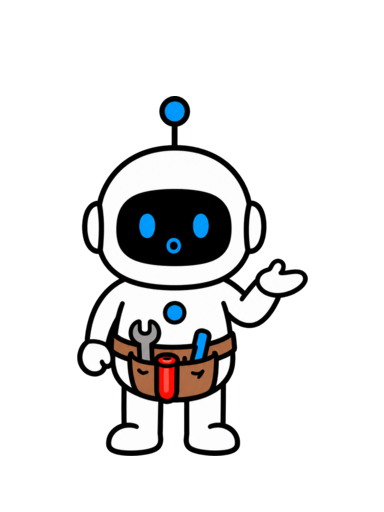
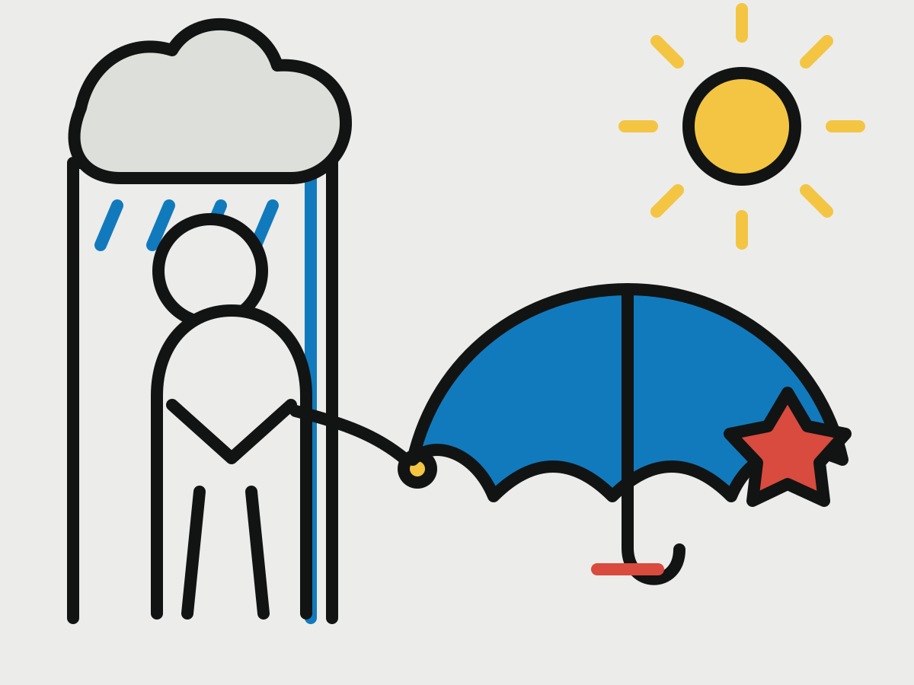
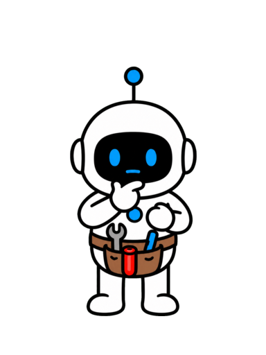
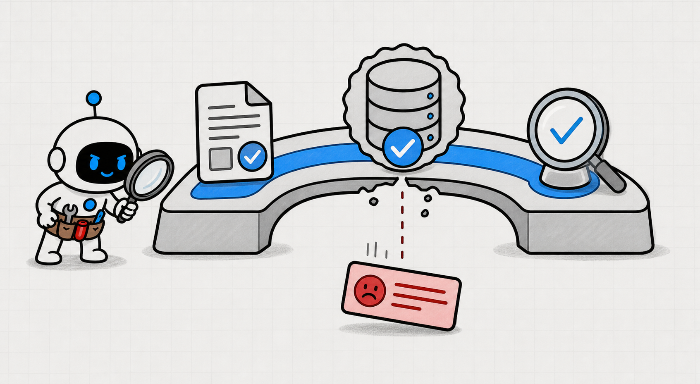
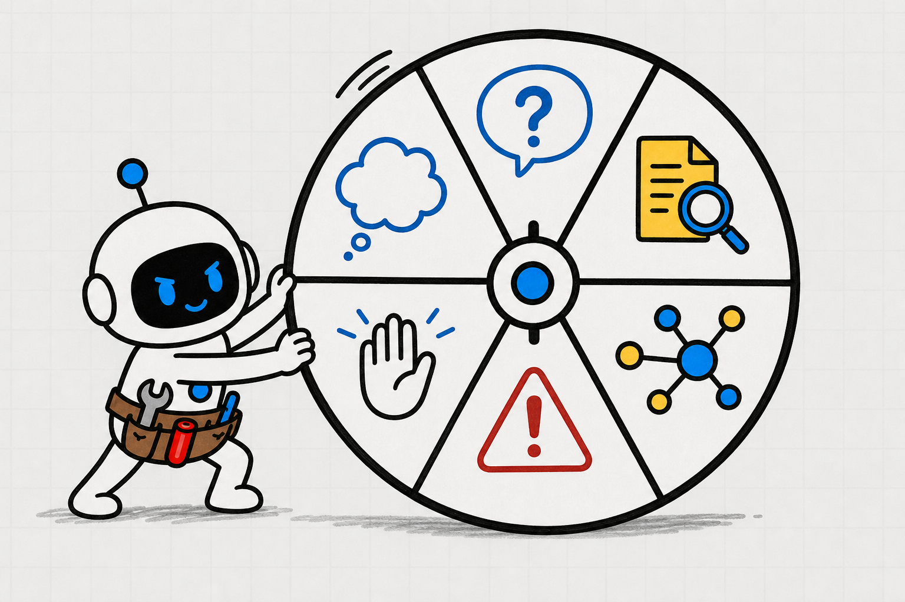

AI 智能体说今天不下雨，你敢不带伞吗？
不带伞？


OpenAI：只奖励答对，AI 智能体更容易猜

OPENAI 奖励命中，也可能奖励猜测
奖励命中，也可能奖励猜测
奖励命中，也可能奖励猜测
它没查天气，却给了确定答案

一句猜测，让你淋了一场雨
这把伞会带你走过 AI 答案三道门

≠
可答 · 证据 · 行动
学会判断：采用、核验，还是停止


把研究变成日常判断能力

高价值 AI 智能体深度方法
AI 智能体深度方法 用一把伞学会答案三道门关注 + 收藏
用一把伞学会答案三道门关注 + 收藏
用一把伞学会答案三道门关注 + 收藏故事推进
流畅回答为什么不等于事实
它为什么会这样回答？
幻觉：说得合理，不代表事实正确


下一句合理 ≠ 当前事实成立

语言规律补不回今天下午的天气

历史文字没有当前观察
生成能力和事实获取能力是两件事

≠
会表达 ≠ 已经观察事实
只看答对率，猜测仍然可能赢


空着没分 · 猜中有分
系统会学会先给答案，别承认未知

命中奖励改变回答习惯

SimpleQA：看模型答对、猜错还是拒答

一套可核对的事实短问答
相近准确率，可能藏着完全不同的错误率

24% 答对，也可能 75% 答错
可靠性不只有准确率一个数字

≠
答对 · 答错 · 知道何时不答
先把流畅答案降级成待核验判断

下一步：它真的能知道吗？
故事推进
先过可答门，再谈答案质量
这一次，不急着回答
第一道门：当前条件允许可靠回答吗？

检查的不是聪明，而是可答性
不可答通常来自四个缺口

不具体 · 拿不到 · 已过期无唯一答案
推理不能制造缺失的观察和权限
≠

难推理 ≠ 当前不可答
有用的不确定性要说明证据状态
不是只把语气改成“大概”
把答案分成四种证据状态
已确认 · 支持不完整 · 推断 · 未知

回到这把伞：哪些已知，哪些仍未知
地点已确认 · 阵雨是推断时间仍未知
精确百分比不能替代真正的校准
证据缺口不会因为 87% 消失
过了可答门，你知道能答到哪里


能回答什么 · 还缺什么
能查到，不等于证据已经足够
≠
下一步：它凭什么知道？
故事推进
让证据和行动各过一道门
第二道门：证据

证据门要问三个问题
接近事实 · 来源独立支持哪句话
一手预报和最新雷达更靠近事实
来源要离事实足够近
三个应用，可能只是同一个数据源

来源数量 ≠ 独立证据
证据支持到哪里，判断就说到哪里
≠
日期 · 地区 · 对象 · 条件都要对齐
承认未知，也能给出可行动建议
不能保证下雨，但建议带折叠伞
低成本决定把故事带到行动门
第三道门：行动
如果判断错了，损失多大、能否撤销

多带伞，只增加一点重量
高影响、难撤销的动作必须停下来

转账 · 用药 · 权限公开发布

三道门展开，就是六步核验清单

可答性 · 判断 · 证据核验 · 风险 · 反馈
把失败保存成下一次的测试

≠
记录问题 · 证据 · 实际结果
答案最终变成一条可检查的决策链
问题 · 证据 · 未知 · 允许行动

同一把伞，两种完全不同的回答
自信猜测 vs 可检查建议
你真正学会的是 AI 答案三道门
≠
可答门 · 证据门 · 行动门
任何一道门失败，就补信息或停止

把像真的，变成足以支持决定
让每一份自信先说明依据
再获得影响现实的资格


猜一个答案往往比诚实说不知道更容易得分。
早上七点半，智能体让你放心出门。
下午你被一场大雨淋透，晚上才知道：它根本没查天气，
只是根据最近的趋势猜了一次。
这期我们就跟着这把伞，学会判断 AI 答案的三道门：
这件事现在能不能知道，它凭什么知道，以及如果错了能不能行动。
学完后，你能用三道门快速判断一份答案是可以采用、需要核验，
还是必须停止。
这套方法是把研究结论整理成日常判断法。
视频全程干货高价值，让你成为更擅长使用 AI 的人，
内容较长，点点关注收藏不迷路。
好，我们把镜头倒回它说“不用带伞”的那一秒。
语言模型产生答案时，
并不是从一个写着“今天天气”的抽屉里取出事实。
它更像是在判断：根据眼前这些文字，下一句怎样说最合理。
这也解释了什么叫幻觉。
幻觉不是语句奇怪，也不只是偶尔口误，
而是模型用非常合理的表达，给出了一个可以核对、
但实际错误的事实。
模型在预训练中学到的，主要是文字和事实通常怎样一起出现。
它不会在读到每句话时，都同时得到一张可靠的真假标签。
像“水在零摄氏度附近结冰”这种高频而稳定的知识，
语言里有大量重复线索。
可是“你家附近今天下午四点会不会下雨”，既具体又随时变化，
无法靠过去的语言规律补回当前真相。
所以模型能够把一句话说得很像答案，
不代表它已经观察到了答案所依赖的事实。
生成能力和事实获取能力，是两件不同的事。
后训练和评测本来应该减少错误，但如果规则只看答对率，
猜测仍然可能得到奖励。
这就像做一道不会的选择题。
空着一定不得分，随便选一个却还有猜中的机会。
猜一个人的生日，有三百六十五分之一的机会碰巧答对；
直接说不知道，却肯定拿不到准确率的分数。
系统如果只奖励命中，就可能慢慢学会：先给答案，
别轻易承认未知。
OpenAI 在研究中引用了 SimpleQA。
SimpleQA 是一套事实问答评测，主要由答案明确、
可以核对的短问题组成。
正因为答案能够验证，它很适合观察模型遇到事实问题时，是答对、
猜错，还是选择不回答。
其中一个模型答对百分之二十二，答错百分之二十六，
其余问题选择不回答。
另一个模型答对百分之二十四，看起来只高了两点；
但它答错了百分之七十五，而且几乎从不拒答。
如果只看答对率，第二个模型似乎稍强。
把错误率和拒答率一起看，你才会发现：它不是知道得更多，
而是更愿意猜。
这带来第一个重要认知：可靠性不是一个准确率数字。
它至少同时包含答对、答错和知道何时不该回答。
因此，面对一份流畅答案，先不要把它当作结论。
把它当作一条等待检查的判断。
当你完成这个转换，接下来的问题就很清楚了：
这条判断在当前条件下，到底有没有可能被知道？
第二天早上，你又问：我今天出门要带伞吗？
这一次，智能体没有立刻回答。
它先确认你在上海，早上八点出门、晚上七点回来，
中间还需要步行。
它还要确认一件更关键的事：自己能不能查询实时天气。
这些问题共同组成第一道门——可答门。
它检查的不是模型够不够聪明，
而是当前条件是否允许任何人得到可靠答案。
一件事可能因为四种原因暂时不可答。
问题本身不够具体，例如没有地点和时间；
所需信息根本拿不到，例如没有天气接口权限；
手里的信息已经过期，例如只有昨天的预报；
或者问题本来就没有唯一答案，
例如步行和开车的人对“要不要带伞”有不同标准。
这四种情况都不能靠“再认真推理一次”解决。
推理可以整理已有信息，却不能凭空制造缺失的观察、权限和事实。
这就是可答门带来的能力：你能够区分一件事是难以推理，
还是在当前信息下根本无法可靠回答。
如果智能体没有天气查询能力，
正确回答不是“我大概有百分之六十把握不下雨”，而是：
我无法确认当前天气，最近的趋势只能作为推断。
不确定性也不是把语气改成“可能、也许、大概”。
真正有用的不确定性，要说明证据处在什么状态。
已经查到并且能够对应证据的，是已确认事实。
有一些支持，但证据还没有覆盖全部条件的，是有支持但不完整。
根据事实和假设进一步得出的，是推断。
当前缺少信息、工具或唯一答案的，是未知。
放回带伞的故事里，你的位置和出行时间已经确认；
这个季节容易出现阵雨，只是一种推断；
今天几点下雨，在查询之前仍然是未知。
这四种状态比“百分之八十七可信”更有价值。
除非系统针对这类任务做过真正的校准，
否则精确百分比只会让证据缺口看起来更科学。
通过可答门以后，你已经知道这件事能不能回答，
也知道哪些部分还不能回答。
但“能够查到”仍然不等于“现有证据已经足够”。
你还需要第二道门：它到底凭什么知道？
智能体打开当地气象部门的最新预报。
假设预报提示下午可能有阵雨，它又查看临近降雨和雷达信息，
确认云雨带是否接近你的活动区域。
这就是第二道门——证据门。
证据门不只检查有没有来源，还要检查三个更重要的问题：
来源离事实有多近，不同来源是否真的独立，
以及证据究竟支持了哪一句判断。
天气预报直接来自气象部门，比一篇转述天气的文章更靠近事实。
最新雷达提供了另一个观察角度，
可以帮助判断预报中的降雨是否正在接近。
三个应用写着同一句话，不一定是三份独立证据。
它们可能只是复制了同一个数据源。
来源数量增加了，信息却没有增加。
同样，预报说“上海下午有阵雨”，
不等于你所在的街道四点整必然下雨。
雷达看到云带接近，也不等于它一定会在你走出地铁站时落雨。
证据支持到哪里，判断就说到哪里。
这叫判断和证据对齐。
很多自信错误并不是引用了假信息，
而是把真实信息贴到了错误日期、错误地区、
错误对象或错误条件上。
证据门要做的，就是阻止结论悄悄超出证据范围。
现在，智能体可以说：你今天在上海，八点到十九点之间需要步行。
最新预报提示下午可能有阵雨，雷达也显示云雨带正在接近。
现在不能确认你一定会淋到雨，但带一把折叠伞的成本很低，
我建议带上。
这份回答仍然承认未知，却已经足够支持一个低成本的决定。
于是我们来到第三道门——行动门。
行动门不再问答案像不像真的，而是问：如果判断错了，
损失有多大；
已经执行以后，能不能轻易撤销。
多带一把伞，最多增加一点重量，所以证据不完美时，
可以选择更稳妥的做法。
如果同样的不确定判断会触发转账、用药、修改权限或公开发布，
门槛就必须提高。
智能体可以查资料、整理证据和提出建议，但在高影响、
难撤销的行动前，必须停下来等待人工确认。
这不是对所有任务都进行同样复杂的核验，
而是让核验成本跟随错误后果。
低风险任务可以快速检查，高风险任务需要一手证据、
独立核验和明确批准。
现在，把三道门展开，就得到完整的六步事实核验清单。
可答门负责写清问题和关键判断；
证据门负责定义证据标准并完成真实核验；
行动门负责评估风险，并把失败保存成新的测试。
这六步对应的是：可答性、判断清单、证据标准、真实核验、
行动风险和反馈测试。
第二天，如果预报和实际天气不一致，记录当时的问题、
证据和结果。
下一次再遇到相同情况，系统就能检查自己是否又犯了同一种错误。
到这里，AI 给出的已经不只是一句答案，
而是一条可以检查的决策链：问题是什么，证据在哪里，
哪些仍然未知，以及下一步允许做什么。
现在，把两次回答放在一起看。
第一次，智能体只说：不用带伞，今天是晴天。
它很短、很顺、很自信，却没有告诉你它根本没查。
第二次，它先判断问题是否可答，再核对来源和证据范围，
最后根据错误后果给出一个容易撤销的行动建议。
第二个答案不一定更像一个无所不知的 AI，
但它更像一个值得信任的助手。
更重要的是，
你已经获得了一项可以迁移到任何 AI 任务的能力。
看到确定答案时，先过可答门：这件事现在真的能够知道吗？
再过证据门：它凭什么知道，证据是否支持它说的全部内容？
最后过行动门：如果判断错了，损失是什么，
这个动作还能不能撤销？
三道门都通过，答案才有资格进入行动。
任何一道门失败，就去补信息、重新核验、请求人工批准，
或者停止。
以后你不需要先判断模型到底有多聪明。
只要沿着这三道门，就能把“它说得很像真的”，
转换成“这份答案是否足以支持我的决定”。
目标不是让 AI 智能体变得胆小，
也不是让每个答案都拖得很长。
目标是让它的每一份自信，都先说明依据，再获得影响现实的资格。
关注 Tiny Agent，成为更擅长使用 AI 的人！
TINY AGENT / AI AGENT FIELD NOTE
AI 智能体说
今天不下雨，
你敢不带伞吗？

VOICE

关注 Tiny Agent
成为更擅长使用 AI 的人！